Run Carry / Hydration / Heat Management
Sports Bra Running Vest

Primary UseTrail running
CarryNo-bounce storage
Hydration1L bladder compatible
A run-carry concept for women who refuse to choose between hydration, stable storage, and heat management on long efforts through rugged terrain.
The vest integrates large pockets for nutrition, phone, keys, and other small essentials while keeping the load close to the body.
The back pocket is compatible with a 1L hydration bladder, giving runners water capacity without adding a traditional vest layer over the torso.


Process Deck
Project brief to final garment: 2.5 weeks

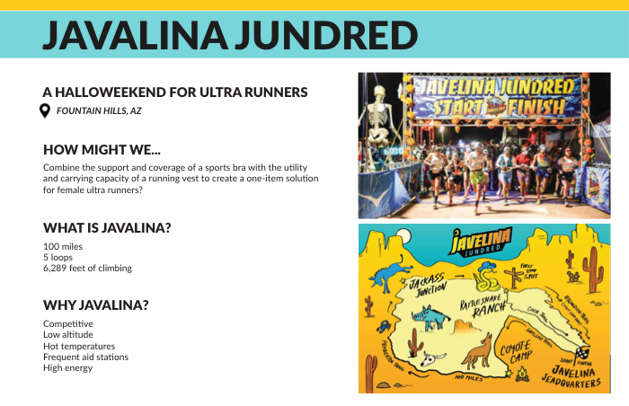
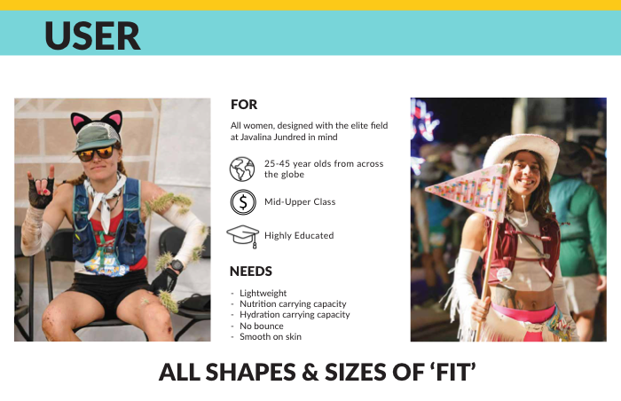
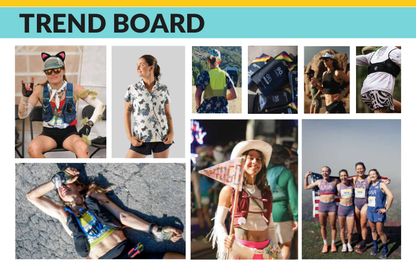
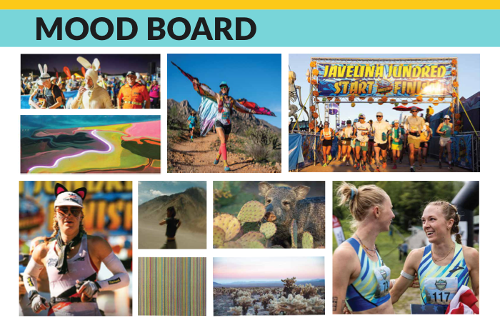
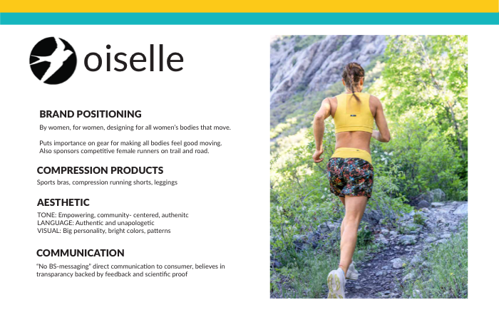
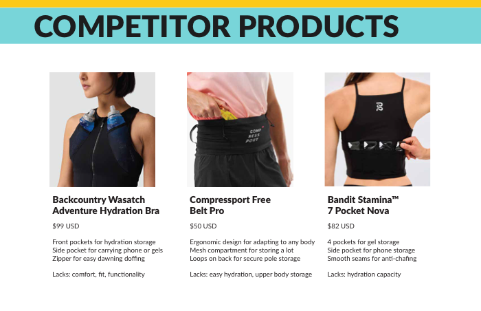
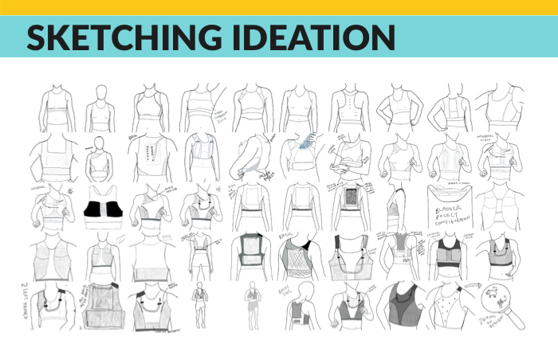
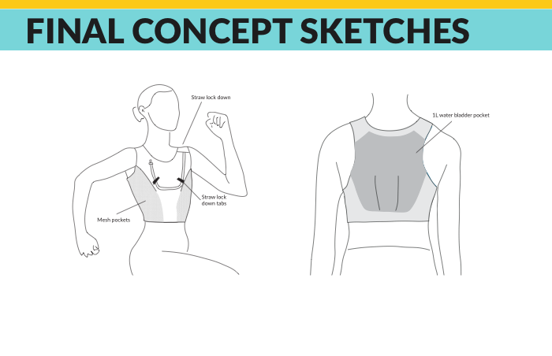
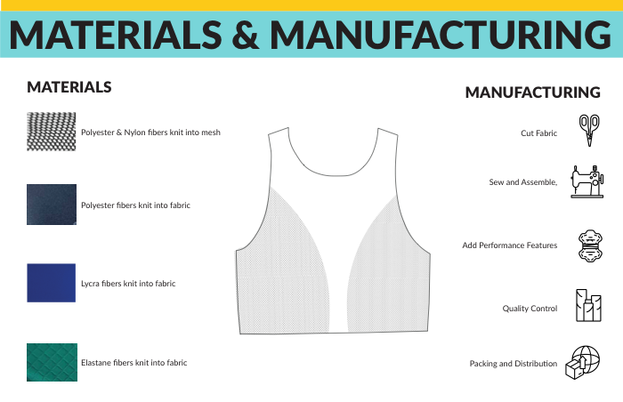
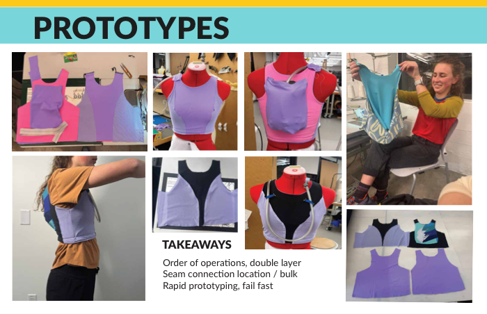
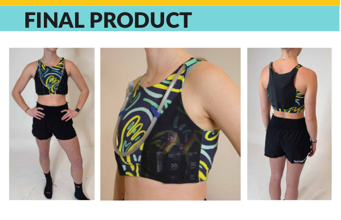
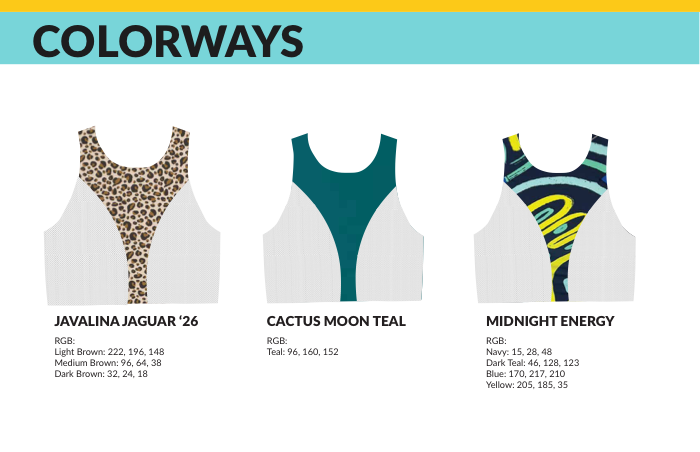